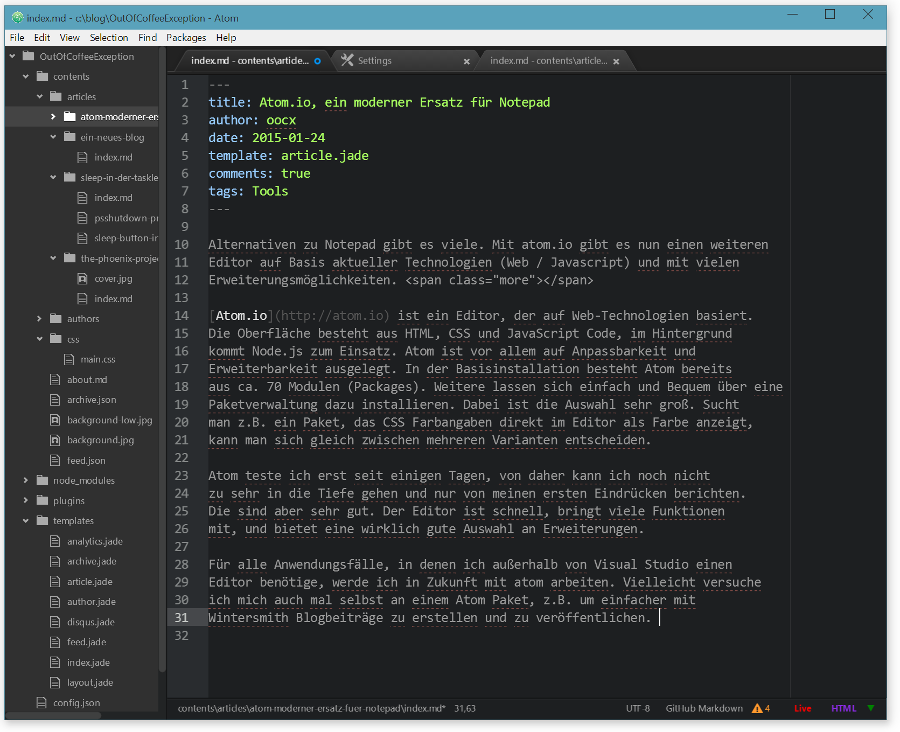
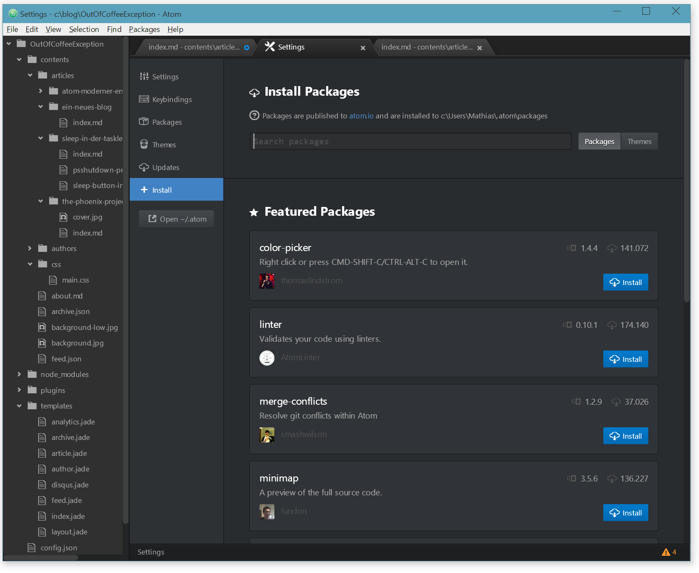

Alternativen zu Notepad gibt es viele. Mit atom.io gibt es nun einen weiteren Editor auf Basis aktueller Technologien (Web / Javascript) und mit vielen Erweiterungsmöglichkeiten.

Atom.io ist ein Editor, der auf Web-Technologien basiert. Die Oberfläche besteht aus HTML, CSS und JavaScript Code, im Hintergrund kommt Node.js zum Einsatz. Atom ist vor allem auf Anpassbarkeit und Erweiterbarkeit ausgelegt. In der Basisinstallation besteht Atom bereits aus ca. 70 Modulen (Packages). Weitere lassen sich einfach und Bequem über eine Paketverwaltung dazu installieren. Dabei ist die Auswahl sehr groß. Sucht man z.B. ein Paket, das CSS Farbangaben direkt im Editor als Farbe anzeigt, kann man sich gleich zwischen mehreren Varianten entscheiden.

Atom teste ich erst seit einigen Tagen, von daher kann ich noch nicht zu sehr in die Tiefe gehen und nur von meinen ersten Eindrücken berichten. Die sind aber sehr gut. Der Editor ist schnell, bringt viele Funktionen mit, und bietet eine wirklich gute Auswahl an Erweiterungen.
Für alle Anwendungsfälle, in denen ich außerhalb von Visual Studio einen Editor benötige, werde ich in Zukunft mit atom arbeiten. Vielleicht versuche ich mich auch mal selbst an einem Atom Paket, z.B. um einfacher mit Wintersmith Blogbeiträge zu erstellen und zu veröffentlichen.